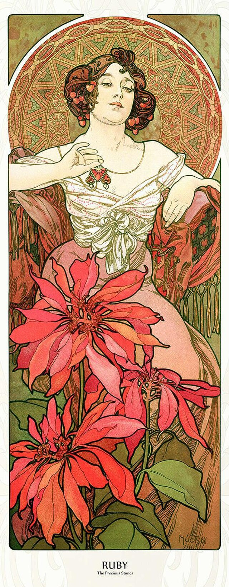
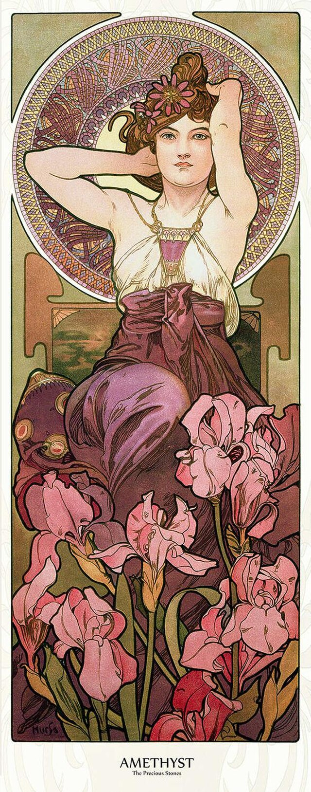
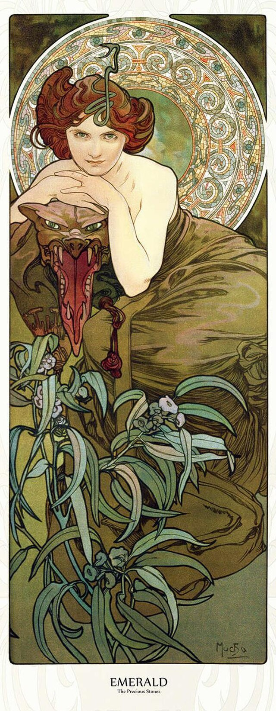
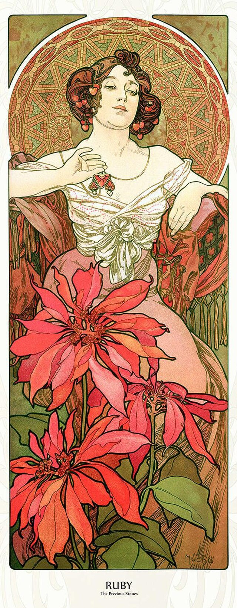
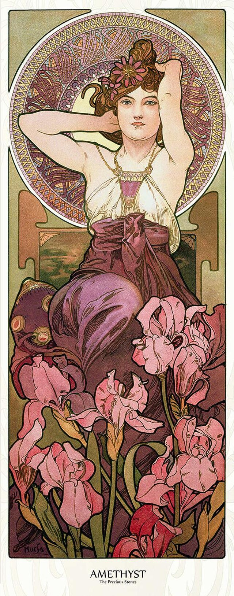
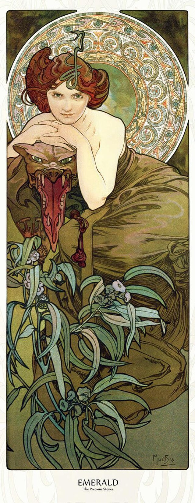

The image is Alphonse Mucha’s striking "Ruby" panel from his 1900 series, Precious Stones, embodying the stone's association with fire, vitality, and deep passion. The woman is seated confidently, her rich, dark red hair adorned with cherries, and she is dressed in robes that echo the gemstone’s fiery color and the warmth of the summer season.
Unlike the gentle contemplation of Topaz, the Ruby figure engages the viewer with a direct, intense gaze, conveying a sense of fierce beauty and energy. She is framed by massive, stylized red flowers and a vibrant, warm-toned circular background that maximizes the decorative intensity of the Art Nouveau composition. The inclusion of the cherry motif further links her to the midsummer harvest and the vibrant life force associated with the precious stone.
Emerald: The Verdant Muse of Renewal and Spring
The image (Stones-5.jpg, far right) is Alphonse Mucha’s "Emerald" panel, the final piece in his 1900 series, Precious Stones. This piece captures the invigorating, deep green color of the emerald, symbolizing renewal, nature, and the fresh vitality of the spring season. The woman is depicted with a seductive, almost feline gaze, leaning down toward the viewer with her rich, auburn hair entwined with green leaves and berries.
She is set against a background dominated by lush greenery and stylized foliage, emphasizing the emerald's connection to the earth and growth. The overall composition is a masterclass in Art Nouveau, using the long, vertical format and the mesmerizing repetition of organic motifs to create a piece of decorative art that is both sensual and sophisticated. The Emerald panel concludes the series, representing the cyclical renewal found in both nature and the symbolic world of gems.
 




